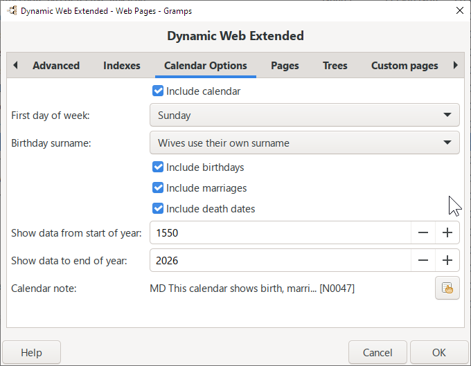

22 Calendar Options¶
☑ For creators ☐ For visitors
DWE adds a Calendar Options tab to the report’s options tabs. It defines the Calendar page included in a DWE website. The calendar displays days of the year, and for each day it can show the events that occurred on that day.
The Calendar is optional.
-
The website creator determines which event types are included, the historical year range, and some other display settings.
-
Visitors can explore the events included in the generated website but cannot change the creator's configuration.

Figure 38- Calendar options
22.1 Include calendar¶
Enables the Calendar page in the generated website. When this option is disabled, the Calendar page is omitted from the generated website, and the remaining calendar-specific options are disabled.
22.2 First day of week¶
Determines which weekday appears at the beginning of each calendar week.
The Calendar uses the current year to determine the weekday positions of dates, independently of the selected first day of the week.
22.3 Birthday surname¶
This option determines which surname is displayed for women in Calendar birth entries. This option does not affect the surname displayed for men.
-
Own surname — Uses the woman's own primary name as recorded in Gramps.
-
Husband's surname (first family) — Uses the surname of the husband in her first listed family.
-
Husband's surname (last family) — Uses the surname of the husband in her last listed family.
First and last family refer to the order of families recorded in Gramps, not necessarily the chronological order of marriages.
If a woman has a Married name recorded in Gramps, that name takes precedence over the selected husband's surname.
The husband's surname is taken from his primary name in Gramps when the report is generated. If the selected family or husband is unavailable, the woman's own primary name is used.
This option applies only to birth entries. Marriage and death entries use the individuals' primary names.
22.4 Event inclusion¶
Three options determine which event types are included:
-
Include birthdays — Include birth events.
-
Include marriages — Include marriage events.
-
Include death dates — Include death events.
The options can be selected independently. Only the selected event types are exported to the Calendar.
22.5 Calendar year range¶
Two options determine the range of historical event years included in the Calendar:
-
Show data from start of year
-
The earliest year to include
-
defaults to the current year minus the Gramps maximum probable living age, as defined in the Gramps configuration.
-
-
Show data to end of year
-
The latest year to include
-
defaults to the current year.
-
Both boundary years are included.
For example, setting the starting year to 1850 and the ending year to 1950 includes eligible events dated from 1 January 1850 through 31 December 1950.
22.5.1 Default year range¶
Year values can be changed to include earlier historical events or future-dated events.
If new year values are entered then Gramps remembers the change the next time the report options are opened, it does not replace them with the defaults.
22.5.2 Year-range validation¶
The starting year must not be later than the ending year.
If the starting year exceeds the ending year, DWE displays an error message and does not generate the report until the range is corrected.
22.5.3 Relationship to the living-person filter¶
The year range determines which events are included in the generated Calendar.
The visitor's Living people only / All people selection determines which of those events are displayed.
These are independent filters.
For example, a person born in 1850 with no recorded death date may be excluded from the Living people only display because Gramps considers the person unlikely to be alive, even though their birth event falls within the configured year range.
22.6 Calendar note¶
The Calendar note option allows the website creator to select an existing Gramps note containing explanatory information about the Calendar.
When a note is selected and contains text, it is displayed in an expandable About... section above the Calendar heading.
The note supports DWE's existing Gramps text formatting and Markdown processing.
If no note is selected, the About section is omitted.
The website creator can use the note to explain the Calendar's purpose, the information included, or any conventions specific to the family history. An example Calendar Note is included in the Appendix.
22.7 Further information¶
For details of the Calendar display, visitor controls, event popups, date handling and privacy restrictions, see chapter 19 Calendar in this guide.